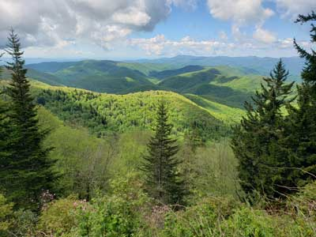
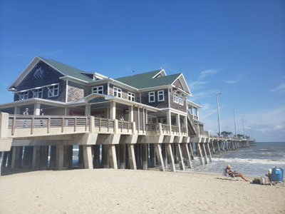
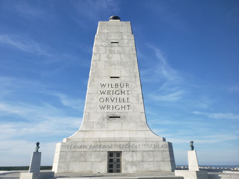
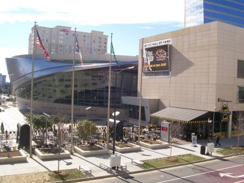
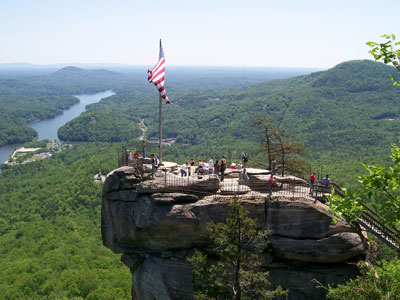
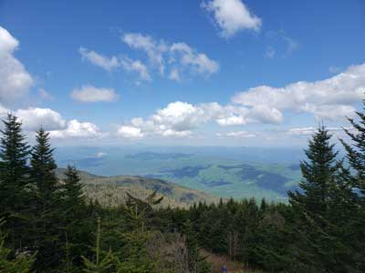
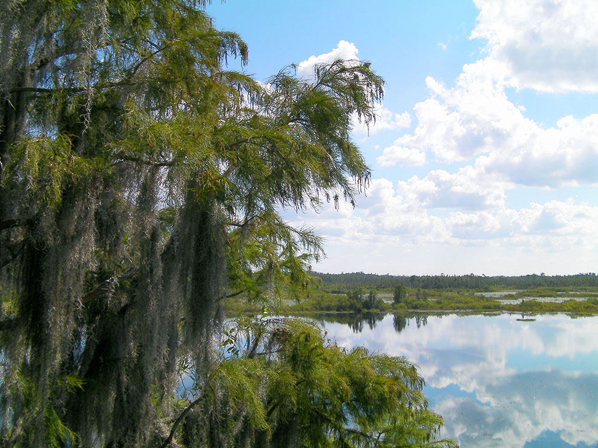
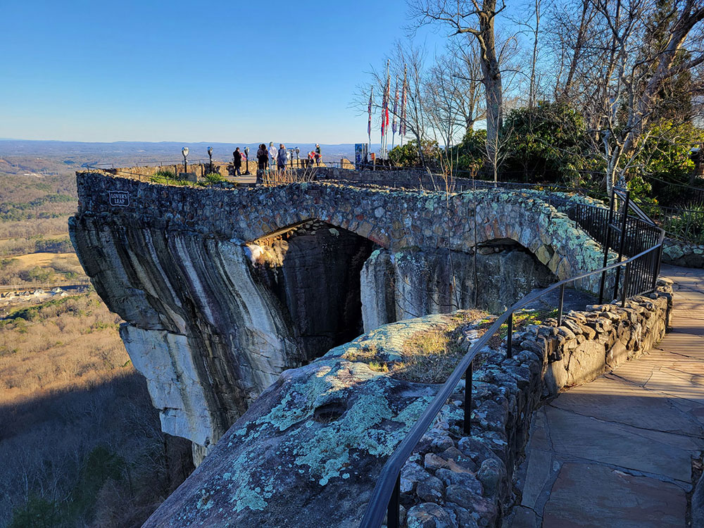

Stroll Savannah's oak-lined squares, explore Atlanta's civil rights history, and hike the Blue Ridge Mountains amid Georgia's Southern hospitality.
Top Locations








Savannah★
oldest city in Georgia established in 1733 on the Savannah River attracts millions of visitors to its cobblestone streets, parks, and notable historic buildings
Atlanta★
Major transportation and media hub distinguished by civil rights landmarks, a vast urban tree canopy, a thriving film scene, and one of the world’s busiest airports.
Golden Isles of Georgia★
Preserves the archaeological remnants of a fort and town built by James Oglethorpe between 1736 and 1748 to protect the southern boundary of the British colony of Georgia from Spanish raids

Moultrie Creek from St. Augustine, FL, USA, CC BY-SA 2.0, via Wikimedia Commons; Image Size Adjusted

Georgia Appalachian Mountains★
Mountainous region known for scenic overlooks, waterfalls, hiking trails, charming small towns, vineyards, forests, and the southern terminus of the Appalachian Trail.
Moultrie Creek from St. Augustine, FL, USA, CC BY-SA 2.0, via Wikimedia Commons; Image Size Adjusted
Dahlonega★
Historic gold rush community known for its preserved downtown square, wineries, mountain scenery, waterfalls, outdoor recreation, and rich Appalachian heritage.

Rock City Gardens
National Protected Areas
Rock City Gardens
Rock City Gardens
Landmarks and Landscapes
Overview
Georgia is a Southeastern state of about 11 million people, known for peaches, civil rights history, Southern hospitality, and a coast of barrier islands. Atlanta is the capital and largest city, and the state is named for King George II of Great Britain. It is the largest state east of the Mississippi River by land area.
Visitors come to see Atlanta's aquarium, civil rights sites, and sports and food scene, the squares and mansions of Savannah, and the beaches and wild horses of the Golden Isles and Cumberland Island. Others come for the mountains and waterfalls of the Georgia Appalachian Mountains, the gold-rush town of Dahlonega, and the Okefenokee Swamp.
Geography
Georgia stretches from the southern end of the Appalachian Mountains in the north to the Atlantic coast and the Okefenokee Swamp in the southeast. The Blue Ridge Mountains in the north have waterfalls and the state's highest point, Brasstown Bald, at 4,784 feet (1,458 m). The Piedmont is rolling hills with Atlanta at its center, the Coastal Plain covers the south, and the Atlantic coast has salt marshes and barrier islands. The Chattahoochee, Savannah, and Altamaha Rivers are major waterways.
History
Cherokee, Creek, and earlier Mississippian peoples lived here, building the mounds at Ocmulgee. James Oglethorpe founded Savannah in 1733 as the last of the 13 colonies, and Georgia became the fourth state in 1788. Cotton and slavery shaped the economy, the Cherokee were removed on the Trail of Tears in the 1830s, and Georgia joined the Confederacy, with Sherman's March to the Sea in 1864. In the 20th century Atlanta became the center of the civil rights movement and the birthplace of Martin Luther King Jr.
Savannah
Savannah, founded in 1733 by James Oglethorpe, is Georgia's oldest city and one of the most beautiful in the South. Its historic district is laid out around 22 shady squares, such as Forsyth Park with its fountain, with live oaks draped in Spanish moss and Antebellum, Georgian, and Gothic Revival architecture. Visitors stroll the cobblestones of River Street, tour house museums such as the Owens-Thomas House, and visit the haunting Bonaventure Cemetery. Fort Pulaski National Monument, Wormsloe Historic Site, and the beaches and lighthouse of Tybee Island are nearby, and the Savannah College of Art and Design gives the city a lively creative scene.
Golden Isles of Georgia
The Golden Isles are a string of barrier islands on the southern Georgia coast, including St. Simons Island, Sea Island, Jekyll Island, and Little St. Simons, with the historic port town of Brunswick on the mainland. Salt marshes, live oak forests, and uncrowded beaches make the area a favorite for biking, kayaking, golf, and relaxing. Jekyll Island was a Gilded Age retreat for millionaires such as the Rockefellers and Morgans, and the St. Simons Lighthouse and Fort Frederica National Monument tell the story of the Colonial era. To the south, Cumberland Island National Seashore is a wild barrier island with maritime forest, empty beaches, wild horses, and the Dungeness ruins, reached only by ferry.
Appalachian Mountains in North Georgia
North Georgia rises into the southern end of the Appalachian Mountains, where the Blue Ridge range holds forested peaks, waterfalls, and small mountain towns. Brasstown Bald, at 4,784 feet (1,458 m), is the highest point in the state, and the Appalachian Trail begins its 2,190-mile route to Maine at Springer Mountain. Amicalola Falls drops 729 feet in a series of cascades, one of the tallest waterfalls in the Southeast, and Tallulah Gorge is a 1,000-foot canyon with a suspension bridge. Helen is a Bavarian-style alpine village, and Dahlonega was the site of America's first major gold rush in 1828 and now has wineries and a charming town square. Fall color peaks in October, and the mountains are a cool escape in summer.
Atlanta
Atlanta is Georgia's capital and largest city, a metropolitan area of more than six million people and the economic hub of the Southeast. It is the birthplace of Martin Luther King Jr., and the Martin Luther King Jr. National Historical Park includes his birth home, Ebenezer Baptist Church, and the King Center, while the National Center for Civil and Human Rights tells the larger story of the movement. Downtown attractions include the Georgia Aquarium, the World of Coca-Cola, and Centennial Olympic Park, from the 1996 Summer Games. Piedmont Park, the Atlanta BeltLine, the High Museum of Art, and the Zoo Atlanta round out the offerings, and Hartsfield-Jackson is among the busiest airports in the world.
National Protected Areas
Georgia's National Park Service sites include Andersonville National Historic Site, the Civil War prison and national prisoner of war museum, and the Jimmy Carter National Historical Park in Plains. Ocmulgee Mounds preserves 17,000 years of Native American history, and Cumberland Island National Seashore has wild horses and maritime forest. In the Atlanta area, Kennesaw Mountain and the Chattahoochee River offer battlefield history and trails, and the Martin Luther King Jr. National Historical Park is in Atlanta.
State Parks and Historic Sites
Georgia's state parks and historic sites range from the mountains to the coast. Amicalola Falls has the tallest cascading waterfall in the Southeast, and Anna Ruby Falls and Brasstown Bald are mountain highlights. Stephen C. Foster, Tallulah Gorge, and Providence Canyon, the "Little Grand Canyon," are well-known parks, and Rock City Gardens on Lookout Mountain is a classic roadside attraction. Historic sites include Fort Pulaski National Monument and Jekyll Island.
Seasons and When to Visit
Spring and fall are the best seasons, with blooming azaleas and dogwoods in March and April and colorful mountain foliage in October. Summer is hot and humid but ideal for the coast, and the mountains are cooler. Winters are mild, with occasional snow in the north, and the Okefenokee and coastal marshes are good for wildlife viewing. Hurricane season affects the coast from June through November.
This article uses material from the Wikipedia article "Georgia_(U.S._state)", which is released under the Creative Commons Attribution-Share-Alike License 3.0. Additional information was drawn from National Park Service, Georgia State Parks, and Explore Georgia.